Slide 8 — Diagnostic (Model Validation) และ FORECAST_AND_SARIMA หน้า 1–13
Lesson 7 จบที่ "โมเดลในใจ 2–3 ตัว" พร้อมค่าพารามิเตอร์ บทนี้คือขั้น 7–8 ของผัง Box-Jenkins: ตัวไหนใช้ได้จริง และใช้แล้วพยากรณ์อย่างไร การตรวจโมเดลเป็นขั้นที่คนยังต้องทำเองแม้ในยุค auto.arima1 และ final มีภาคปฏิบัติแบบ full data analysis คือเขียนโมเดลจาก output ตรวจ diagnostic และพยากรณ์2
| ตอน | คำถามที่ตอบ | เครื่องมือหลัก |
|---|---|---|
| 1 | รู้ได้อย่างไรว่าโมเดลใช้ได้ | standardized residual, Shapiro-Wilk, ACF ของ residual, Ljung-Box |
| 2 | ทำครบทุกขั้นกับข้อมูลจริงอย่างไร | อุณหภูมิโลก ARIMA(1,1,1), ใส่ d ใน arima |
| 3 | สองโมเดลสูสีกัน เลือกตัวไหน | aerosol: ARIMA(2,1,0) กับ ARIMA(0,1,1) |
| 4 | ค่าพยากรณ์มาจากไหน ทำไมไกลแล้วไม่แน่นอน | conditional expectation, MSPE |
| 5 | อ่านผลพยากรณ์ใน R อย่างไร | predict, prediction interval, แปลงกลับ |
สีในสมการ: \(\shk{w_t}\) สีฟ้าคือ shock ที่มองไม่เห็น · \(\prm{\phi},\prm{\theta}\) สีส้มคือพารามิเตอร์ที่ประมาณได้
ร่อนทรายหาทอง ถ้าตะแกรงดี สิ่งที่หลุดลงไปข้างล่างต้องเป็นทรายล้วน ถ้ายังมีเศษทองปนอยู่ แปลว่าตะแกรงยังพลาดอะไรบางอย่าง โมเดลคือตะแกรง residual คือสิ่งที่หลุดลงไป
residual คือส่วนของ X ที่โมเดลที่ฟิตอธิบายไม่ได้ เป็นตัวแทนของ white noise \(w_t\) ที่สังเกตไม่ได้ เราจึงตรวจ ความเหมาะสมของโมเดลโดยดู residual ถ้าโมเดลจับความสัมพันธ์ข้ามเวลาไว้ครบ ส่วนที่เหลือต้องไม่มีโครงสร้างอะไรอีก
ใน regression วิชาอื่นมักแก้ assumption ที่ไม่ผ่าน แต่ time series ไม่ค่อยแก้ ใช้วิธีตรวจ3 ถ้าไม่ผ่านก็กลับไปเลือกโมเดลใหม่ (เส้นประแดงในผังของ Lesson 7) ถ้าโมเดลถูก residual ควรเป็น iid normal คืออิสระกัน, normal, mean 0 และ variance คงที่4 จึงตรวจสามเรื่อง
| ตรวจอะไร | เครื่องมือ | ผ่านเมื่อ | ตอน |
|---|---|---|---|
| outlier | standardized residual | อยู่ใน ±3 (หลุดได้ไม่กี่จุด) | 1.2 |
| normal | histogram, QQ plot, Shapiro-Wilk | p-value มาก, จุดเรียงตามเส้น | 1.3 |
| ไม่สัมพันธ์กัน | ACF ของ residual, Ljung-Box | อยู่ในเส้นประ, p-value มากทุก H | 1.4 |
ข้อมูลจริงเป็น AR(1) แต่ฟิตเป็น white noise residual ก็คือข้อมูลเดิมซึ่งยังมี ACF lag 1 สูง จึงบอกว่าโมเดลขาด AR ในทำนองเดียวกัน residual ที่ยังมี ACF ที่ lag 12 บอกว่าต้องเพิ่ม seasonal (Lesson 9) รูปแบบที่เหลืออยู่จึงชี้ทางแก้ด้วย
การคำนวณ residual ต้องย้อนหา w ในอดีตจาก X ซึ่งทำได้เพราะโมเดล invertible (Lesson 7 ตอน 4.2) และ arima() ไม่ตรวจเรื่องเหล่านี้ให้อัตโนมัติ ต้องสั่งเอง5
mean เป็น 0 อยู่แล้ว หารด้วย σ̂ แล้วจึงควรใกล้ normal มาตรฐาน6 สไลด์จึงบอกว่า standardized residual ควรอยู่ระหว่าง −3 ถึง 3
±3 SD ครอบคลุมราว 99.7% ข้อมูล 150 ค่าจึงคาดว่าจะเกิน ±3 ราว 150 × 0.003 = 0.45 จุด จุดเดียวสองจุดยอมรับได้ แต่ถ้ามีหลายจุดโมเดลอาจไม่เหมาะ7 จำนวนมากแปลว่า error มีหางหนา ซึ่งพบบ่อยในข้อมูลการเงิน
ในคลิปพูดว่า ±1 SD "ประมาณ 64%" และ ±3 SD "99.6" ค่าที่ถูกตาม empirical rule คือ 68%, 95% และ 99.7%
| เครื่องมือ | อ่านอย่างไร |
|---|---|
| QQ plot | แกนนอน quantile ของ normal แกนตั้ง quantile ของ residual ถ้า normal จุดเรียงตามเส้นตรง ปลายสองข้างแยกจากเส้นแปลว่าหางหนา |
| Shapiro-Wilk | H0 คือ standardized residual แจกแจง normal "p-value มาก → fail to reject → normal"8 |
ARMA(1,1) ของ times จาก Lesson 7 ได้ shapiro.test(rstandard(nat)) p-value = 0.3069 มากกว่า 0.05 จึงถือว่า normal QQ plot เรียงตามเส้นเกือบทั้งหมด9 และมีจุดเดียวที่เกิน 3 (3.20) ซึ่งตามข้อ 1.2 ยังยอมรับได้
Shapiro-Wilk อยากได้ p-value มาก เพราะ H0 คือสิ่งที่เราอยากให้เป็น10 กลับด้านกับ ADF ใน Lesson 7 ที่ H0 คือไม่นิ่ง (ตารางรวม test ทั้งหมดอยู่ใน Lesson 7 ตอน 3.2)
residual ต้องไม่สัมพันธ์กัน เพราะความสัมพันธ์ถูกเอาไปไว้ในโมเดลแล้ว11 ACF ของ residual จึงควรอยู่ในเส้นประทุก lag สไลด์ใช้คำว่า roughly เพราะ residual คำนวณจากพารามิเตอร์ที่ประมาณจากข้อมูลชุดเดียวกัน lag ต้น ๆ จึงต่างจาก white noise เล็กน้อย ปัญหาอีกข้อคือแต่ละ lag อาจอยู่ในเส้นทั้งหมด แต่ sample autocorrelation เมื่อรวมเป็นกลุ่มอาจ "มากเกินไป" Ljung และ Box (1978) จึงรวม lag 1 ถึง H ไว้ในสถิติตัวเดียว
H0 คือ ARMA(p,q) เหมาะสม (residual เป็น random) และ H1 คือไม่เหมาะสม (residual ไม่ random) ข้อนี้ให้จดไว้ อยากได้ p-value มาก12 การทดสอบนี้ตรวจว่าโมเดลเหมาะหรือไม่ ไม่ได้ตรวจแค่ว่าสัมพันธ์กันหรือเปล่า13
| ρ̂(h)² | ยกกำลังสองให้ค่าบวกและลบไม่หักล้างกัน |
| 1/(n − h) | ชดเชยที่ lag สูงมีคู่ข้อมูลน้อยกว่า |
| H | lag สูงสุด เลือกได้ค่อนข้างอิสระ tsdiag() คำนวณทุก H ตั้งแต่ 1 ถึงค่าที่กำหนด |
| df = H − p − q | หักจำนวนพารามิเตอร์ ARMA ที่ประมาณ (ใน Box.test ใส่เป็น fitdf = p + q) |
n = 100 residual ของ MA(1) มี ACF ที่ lag 1, 2 เท่ากับ 0.2 และ 0.1 ใช้ H = 2
\(Q=100(102)\left(\dfrac{0.04}{99}+\dfrac{0.01}{98}\right)=10200(0.000404+0.000102)=5.16\)
df = H − q = 2 − 1 = 1 ค่าวิกฤต χ²(1) ที่ 5% คือ 3.84 เนื่องจาก 5.16 > 3.84 จึงปฏิเสธ H0 โมเดลยังไม่เหมาะสม
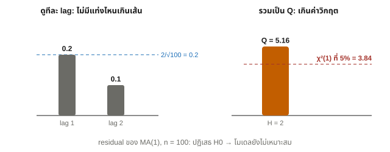
ภาพซ้ายคือการดูทีละ lag: lag 1 แตะเส้นประพอดีและ lag 2 อยู่ในเส้น ตัดสินไม่ได้ ภาพขวาคือ Q ที่รวมสอง lag แล้วเกินเส้นวิกฤตชัดเจน นี่คือข้อดีของการทดสอบแบบรวม ในทางปฏิบัติดูแค่ p-value ไม่ต้องดู Q14

tsdiag(nat, gof.lag = 20) ให้สามกราฟตรงกับสามเรื่องในตาราง 1.115 ของ times: standardized residual มีจุดราว t = 100 เกิน 3 นิดเดียว ACF ของ residual อยู่ในเส้นทั้งหมด และ p-value ของ Ljung-Box อยู่เหนือเส้น 0.05 ทุก H16 ARMA(1,1) จึงผ่าน ถ้ามีจุดอยู่ใต้เส้นแค่สองจุดยังพอรับได้17
ปฏิเสธ H0 ที่ H เหล่านั้น residual ยังไม่ random โมเดลไม่เหมาะสม ให้กลับไปเลือก p, q ใหม่ (ดู ACF/PACF ของ residual ว่าเหลือ lag ไหน) ไม่ใช่ไปเปลี่ยน α ให้ผ่าน
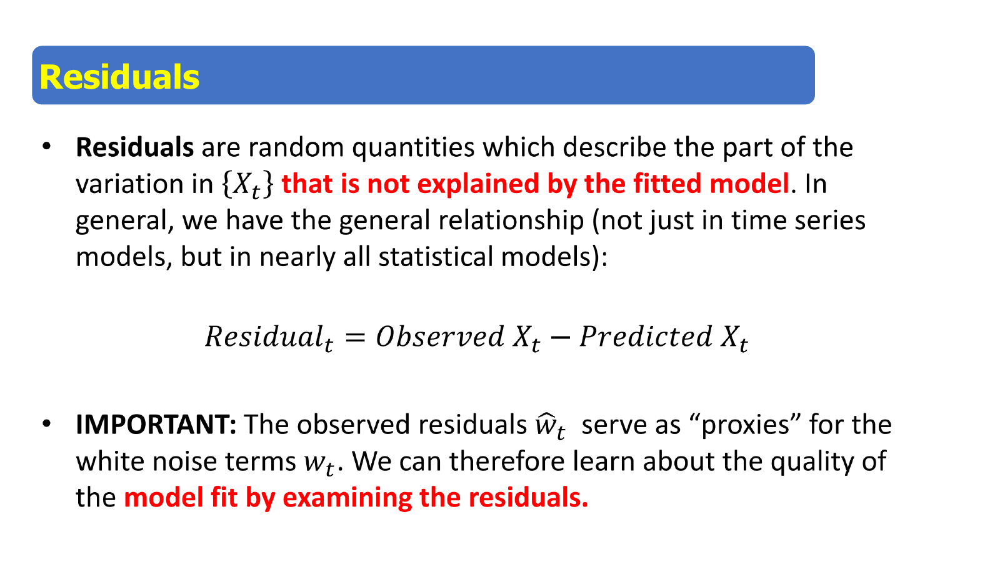
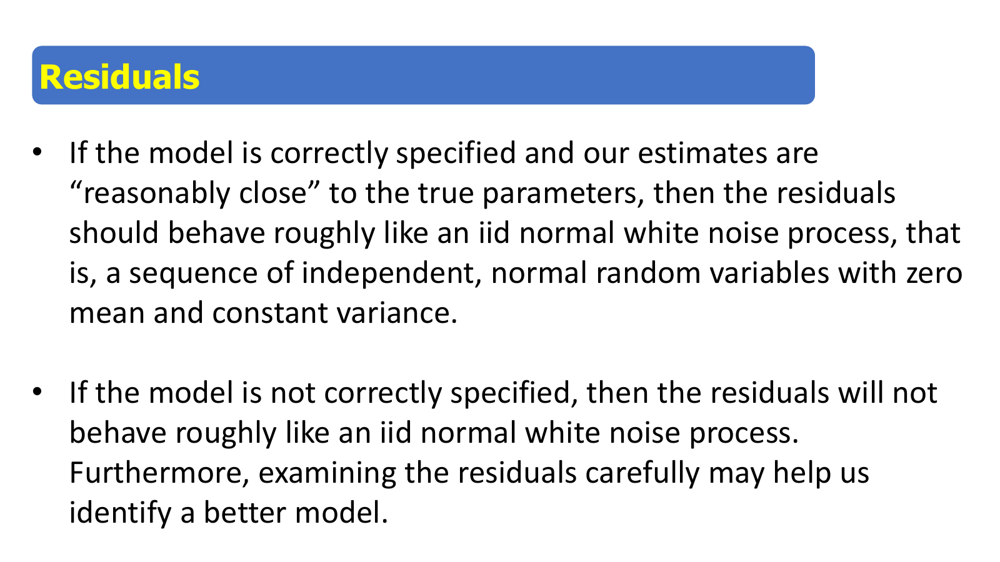
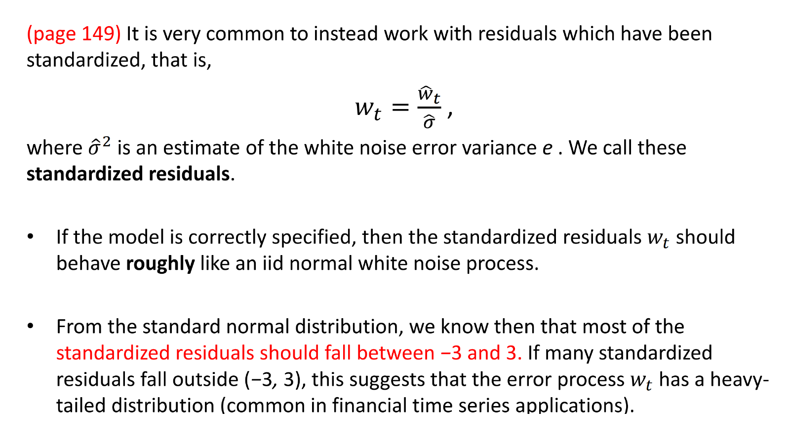


ตัวอย่างนี้มีไว้ให้เห็นว่า full data analysis ที่ข้อสอบภาคปฏิบัติจะถามมีครบทุกขั้นอย่างไร ตั้งแต่ plot จนสรุปว่าโมเดลเพียงพอ และทำไมต้องใส่ d ไว้ในคำสั่ง arima
ข้อมูลคือค่าเบี่ยงเบนของอุณหภูมิเฉลี่ยรายปี ชุดเดียวกับ Lesson 2–318 ข้อมูลรายปีแบบนี้ "อาจจะไม่ค่อยมี seasonal"

อนุกรมมี trend ขาขึ้น แต่ความแกว่งรอบ trend ใกล้เคียงกันตลอด จึงไม่ต้อง take log19 (ขั้น 2 ของผัง Lesson 7 ข้ามได้)
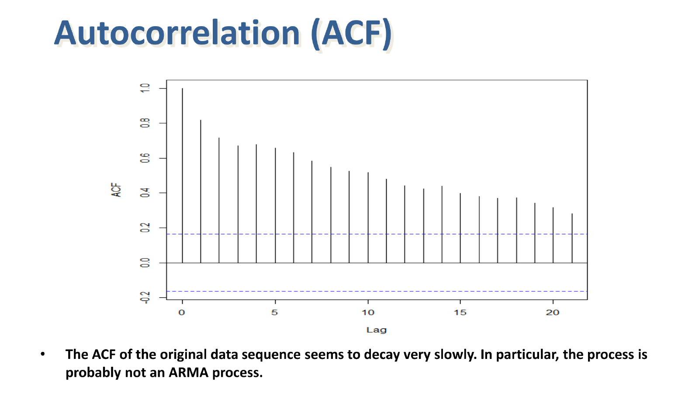
ACF ยังเกิน 0.2 ถึง lag 20 สไลด์สรุปว่า "probably not an ARMA process" ความสัมพันธ์สูงนี้ไม่ได้มาจาก AR แต่มาจากความไม่นิ่งที่เกิดจาก trend20 จึงใช้ d = 1

หลัง difference ACF ทะลุเส้น ±0.168 (2/√141) แค่ lag 1–2 จึงอาจเป็น MA(2) สไลด์เขียนว่า ACF และ PACF ของผลต่างครั้งแรก ดูสมเหตุสมผลกว่ามาก คือดูเป็นอนุกรมนิ่งแล้ว
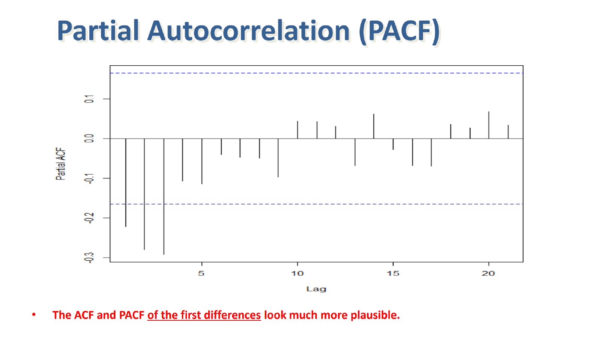
PACF ทะลุเส้นที่ lag 1–3 จึงอาจเป็น AR(3) candidate จึงมี p ≤ 3 และ q ≤ 2 ในใจมีราว 2–3 โมเดล แล้วให้ AIC/BIC ช่วยเลือก21

AIC ต่ำสุดคือ ARMA(0,2) แต่ BIC ต่ำสุดคือ ARMA(1,1) เหมือนกรณี times ใน Lesson 7 ที่ BIC เลือกโมเดลเล็กกว่า สไลด์เลือก ARMA(1,1) ของ ∇X_t เพราะ โมเดลที่ง่ายกว่าดีด้วยหลายเหตุผล จึงได้ ARIMA(1,1,1)
สไลด์เขียนว่า "ARMA(1;4) model had the lowest AIC" ซึ่งไม่ตรงกับตาราง (มี q ถึง 3 เท่านั้น) น่าจะเหลือจากสไลด์เวอร์ชันเก่า22 ให้เชื่อตัวเลขในตาราง
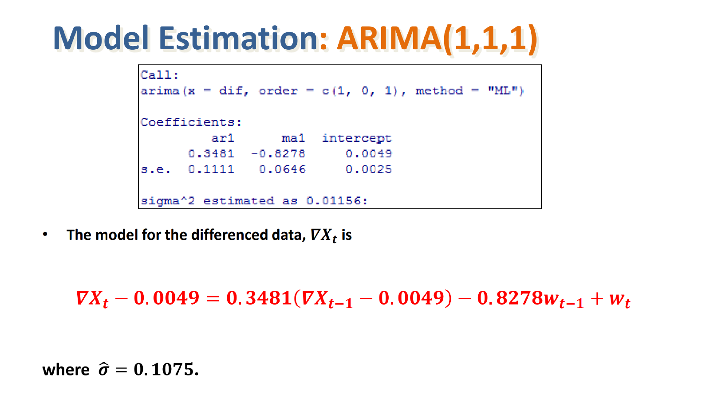
output นี้ฟิต ARMA(1,1) กับผลต่าง (แบบ diff ก่อน) วิธีเดียวกับ Lesson 7 ตอน 5.6 แต่ตอนนี้ตัวที่ลบ intercept คือ ∇X ไม่ใช่ X ทุกครั้งที่มี X_t หรือ differencing ของ X_t ต้องลบ intercept23
arima(dif, order = c(1,0,1), method = "ML"): ar1 = 0.3481, ma1 = −0.8278, intercept = 0.0049, σ² = 0.01156
φ มาจาก ar1 และ θ มาจาก ma1 ถ้า ma1 ติดลบ θ ก็ติดลบ25 intercept คือ mean ของ ∇X_t
\(\nabla X_t-0.0049=0.3481(\nabla X_{t-1}-0.0049)-0.8278w_{t-1}+w_t\) และ \(\hat\sigma=\sqrt{0.01156}=0.1075\)

Shapiro-Wilk ได้ p-value = 0.1798 มากกว่า 0.05 จึงถือว่า normal QQ plot เรียงตามเส้น ยกเว้นจุดปลายล่างสองสามจุด28
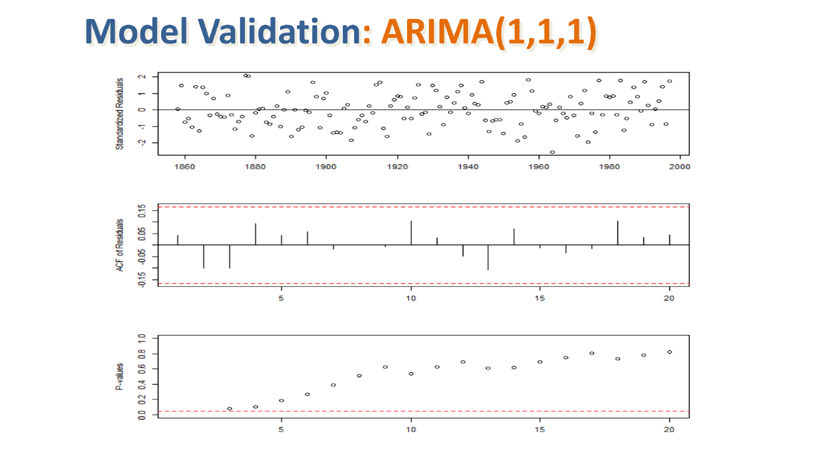
standardized residual อยู่ในช่วง ±3 ทั้งหมด ACF ของ residual อยู่ในเส้น และ p-value ของ Ljung-Box เกิน 0.05 ทุก H จุดช่วง lag ต้น ๆ ต่ำกว่าส่วนอื่นแต่ยังอยู่เหนือเส้น ARIMA(1,1,1) จึงผ่าน29 โค้ดที่แจกไม่มีส่วน diagnostic ของข้อมูลนี้ การบ้านคือ copy จากส่วนของ times มาเติมเอง
| หลักฐาน (สไลด์ 24) | ผลของอุณหภูมิ |
|---|---|
| residual ไม่มี correlation ที่มีนัยสำคัญ | ACF อยู่ในเส้น, Ljung-Box p-value > 0.05 ทุก H |
| Shapiro-Wilk ให้ p-value สมเหตุสมผล | 0.1798 |
| QQ plot ใกล้ normal | เรียงตามเส้น |
| ข้อสรุป | ARIMA(1,1,1) เพียงพอ |
ตารางนี้ใช้เป็นแม่แบบตอบข้อสอบภาคปฏิบัติได้: ไล่สามหลักฐานพร้อมตัวเลข แล้วปิดด้วยข้อสรุปหนึ่งประโยค
ฟิตโมเดลนี้ได้สองแบบ สไลด์จัดเป็น หัวข้อเสริม: difference ก่อนเข้า ARIMA หรือภายใน ARIMA และบอกว่าสองแบบไม่เท่ากัน
arima(diff(data), c(1,0,1)) | arima(data, c(1,1,1)) | |
|---|---|---|
| ค่าคงที่ | มี intercept (drift) 0.0049 | ไม่มี |
| ค่าประมาณ | ar1 = 0.3481, ma1 = −0.8278 | ar1 = 0.3326, ma1 = −0.7887 |
| ค่าพยากรณ์ที่ได้ | ค่าของผลต่าง ต้อง undifference เอง | ค่าบนข้อมูลเดิมทันที |
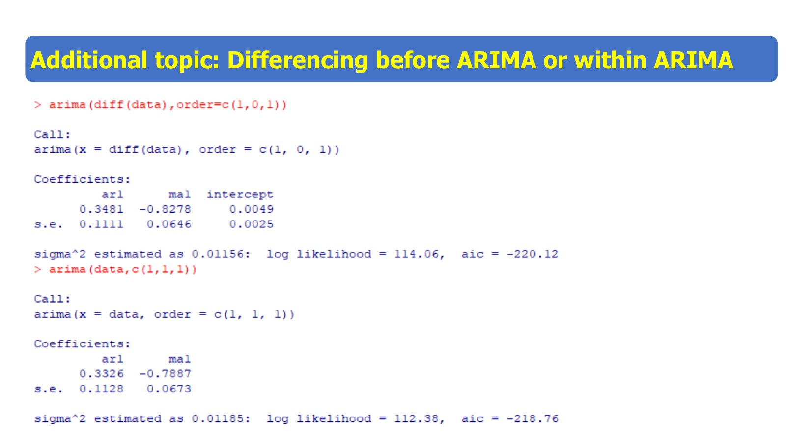
ค่าประมาณสองแบบ "ไม่เหมือนกัน ต่างกันนิดหนึ่ง"30 เพราะแบบแรกประมาณ mean ของผลต่างด้วย

เมื่อใส่ include.mean = FALSE ในแบบแรก ค่าทุกตัวเท่ากับแบบที่สอง31 จึงยืนยันว่าความต่างมาจาก intercept อย่างเดียว แบบที่แนะนำคือใส่ d ในคำสั่ง32
predict(f1, n.ahead = 3)$pred = −0.0791, −0.0243, −0.0052 ถ้านำไปเทียบกับอุณหภูมิจริงที่ราว 0.4 จะผิดทันที
ปี 1997 = 0.43 จึงได้ 0.43 − 0.0791 = 0.3509, แล้ว 0.3265, แล้ว 0.3213 ใน R คือ diffinv(pred, xi = data[142])
ถ้า diff เองแล้ว forecast ค่าที่ได้คือค่าผลต่าง เอาไปคำนวณ accuracy (Lesson 2) แล้วผิด และทำให้ ARIMA ดูแพ้โมเดลอื่นตลอด34 ข้อความเดียวกันนี้ปิดท้าย Class 9-235 อีกกับดักใน R: library(TSA) มี arima ของตัวเองซึ่งพิมพ์ aic ต่ำกว่า stats 2 หน่วย (−222.12 กับ −220.12) ส่วน AIC(fit) ให้ค่าเท่ากัน ถ้าเทียบหลายโมเดลให้ใช้ค่าจากที่มาเดียวกัน
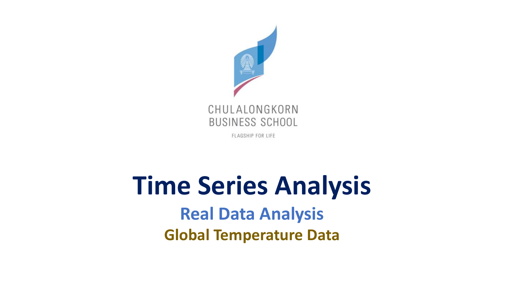


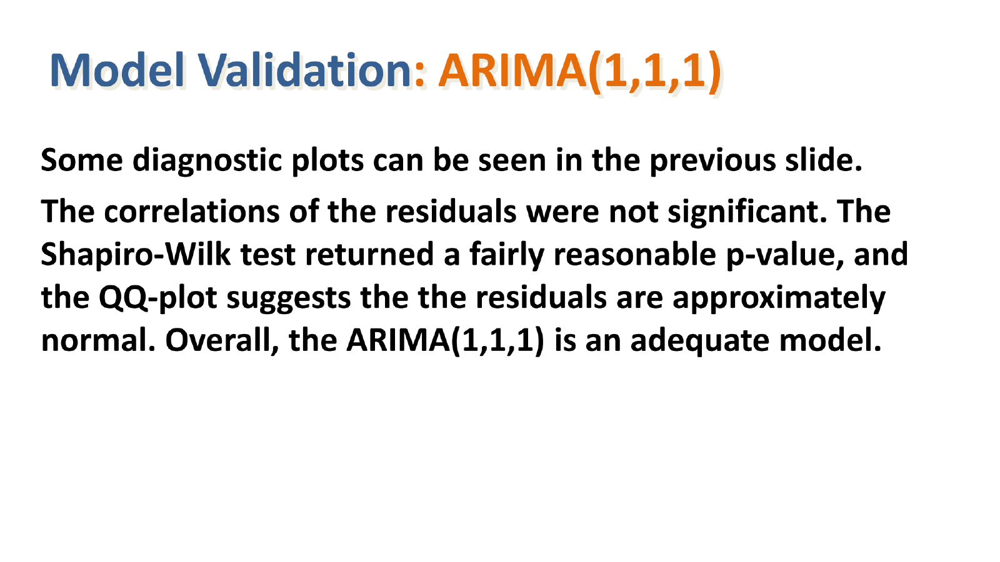
ตัวอย่างนี้มีไว้ให้เห็นว่า เมื่อสองโมเดลฟิตพอ ๆ กัน หลัก parsimony บอกให้เลือกตัวเล็ก แต่ถ้า diagnostic ไม่เท่ากัน ผลของ Ljung-Box ชนะ
ข้อมูลมาจากงานวิศวกรรม36 เครื่อง spray dryer ฉีดของเหลวข้นเข้าห้องอบ ละอองแห้งกลายเป็นอนุภาค ตัวแปรตอบสนองคือขนาดอนุภาค ซึ่งเก็บห่างเท่ากันตามเวลา เป้าหมายคือทำนายขนาดเพื่อควบคุมการผลิต
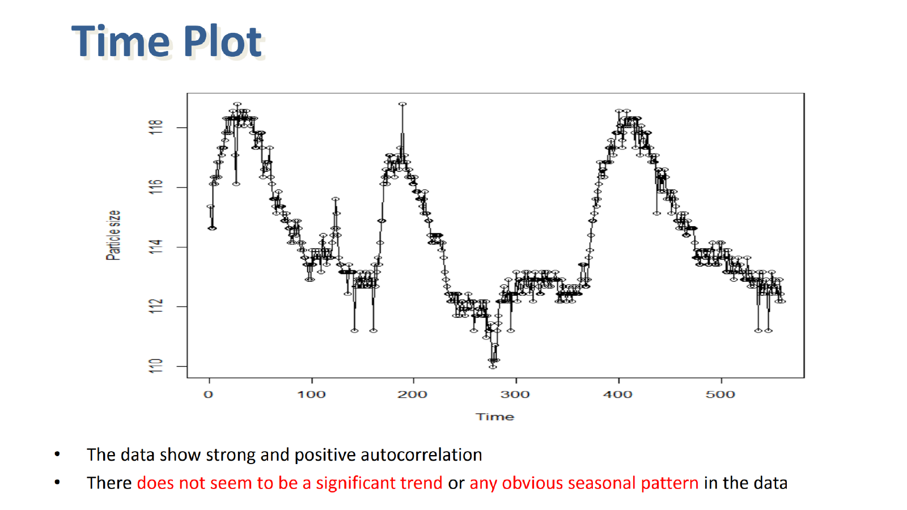
ค่าเคลื่อนขึ้นลงเป็นช่วงยาว สไลด์บอกว่า ดูไม่มี trend ที่มีนัยสำคัญ หรือ รูปแบบฤดูกาลที่ชัด แต่การเดินเป็นช่วงยาวโดยไม่กลับมาที่ค่าเฉลี่ยคือลักษณะของ random walk (Lesson 1)
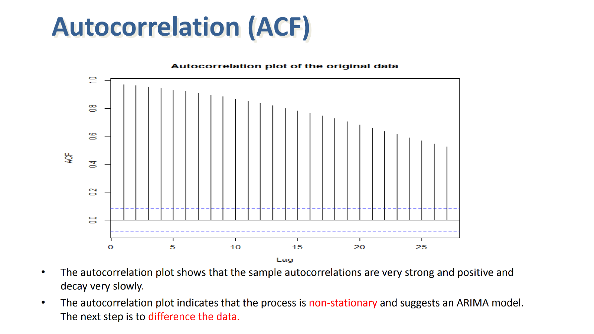
ACF สูงและลดช้ามาก สไลด์จึงสรุปว่าไม่นิ่ง และ ให้ difference ข้อมูล
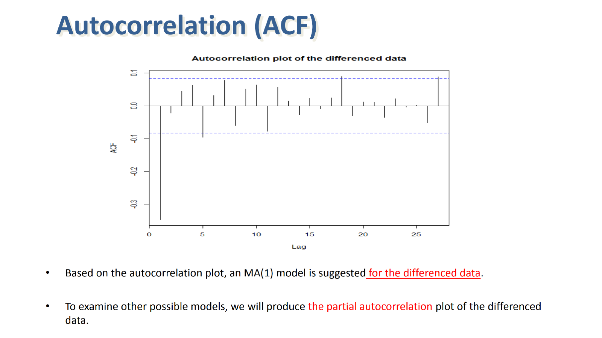
หลัง difference ACF มีแท่งเดียวที่ lag 1 แล้วส่วนใหญ่อยู่ในเส้น จึงแนะนำ MA(1) สำหรับข้อมูลที่ difference แล้ว

PACF ทะลุเส้นที่ lag 1 และ 2 แล้วตัด จึงแนะนำ AR(2) ได้ candidate สองตัวคือ ARIMA(0,1,1) และ ARIMA(2,1,0) ตัวกลางเป็น 1 เพราะมี differencing37

AIC ต่ำสุดในตารางคือ ARMA(3,3) แต่ BIC สองอันดับแรกคือ ARMA(0,1) และ ARMA(2,0) ตรงกับ candidate จาก ACF/PACF และ EACF มีลิ่ม o เริ่มที่ (0,1) สอดคล้องกับ MA(1) บทต่อจากนี้จะใช้ auto.arima แทนการทำตารางเหล่านี้38 (Lesson 10)
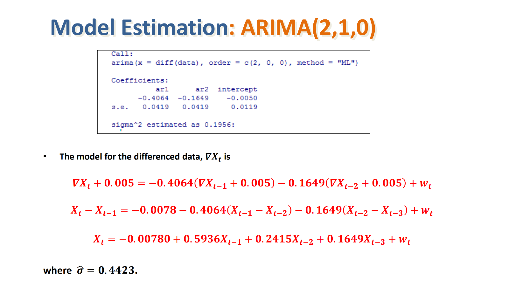
ค่าสัมประสิทธิ์ AR ทั้งสองติดลบ แปลว่าผลต่างที่ขึ้นมักตามด้วยผลต่างที่ลง intercept ติดลบ เมื่อลบออกจึงกลายเป็นบวก
ar1 = −0.4064, ar2 = −0.1649, intercept = −0.0050, σ² = 0.1956
\(\nabla X_t+0.005=-0.4064(\nabla X_{t-1}+0.005)-0.1649(\nabla X_{t-2}+0.005)+w_t\) และ \(\hat\sigma=0.4423\)
\(X_t=-0.0078+0.5936X_{t-1}+0.2415X_{t-2}+0.1649X_{t-3}+w_t\)40

ARIMA(0,1,1) เขียนได้ \(\nabla X_t+0.0051=-0.3921w_{t-1}+w_t\)41 ซึ่งเทียบเท่า SES ที่ α = 1 − 0.3921 = 0.61 (Lesson 7 ตอน 1.3) σ² ของสองโมเดลใกล้กันมาก (0.1956 กับ 0.1966) ถ้า diagnostic ดีเท่ากันจะเลือก ARIMA(0,1,1) เพราะมี θ ตัวเดียวและเขียนง่ายกว่า4243 แต่ต้องดู diagnostic ก่อน
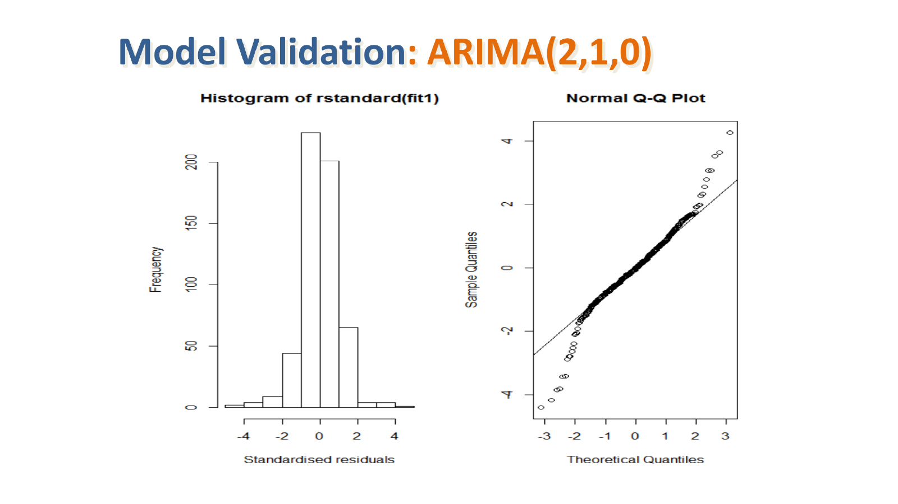
histogram แคบและสูงกว่า normal มีหางยาว QQ plot ปลายทั้งสองข้างแยกจากเส้น standardized residual สูงสุดราว 4.4 รันเองได้ Shapiro-Wilk p-value ใกล้ 0 ทั้งสองโมเดล ข้อมูลจริงมักผ่านไม่ครบทุกข้อ

Ljung-Box ของ ARIMA(2,1,0) ต่ำกว่า 0.05 เฉพาะ lag ท้าย ๆ (H = 18–20) ไม่กี่จุดแบบนี้ยังพอรับได้44
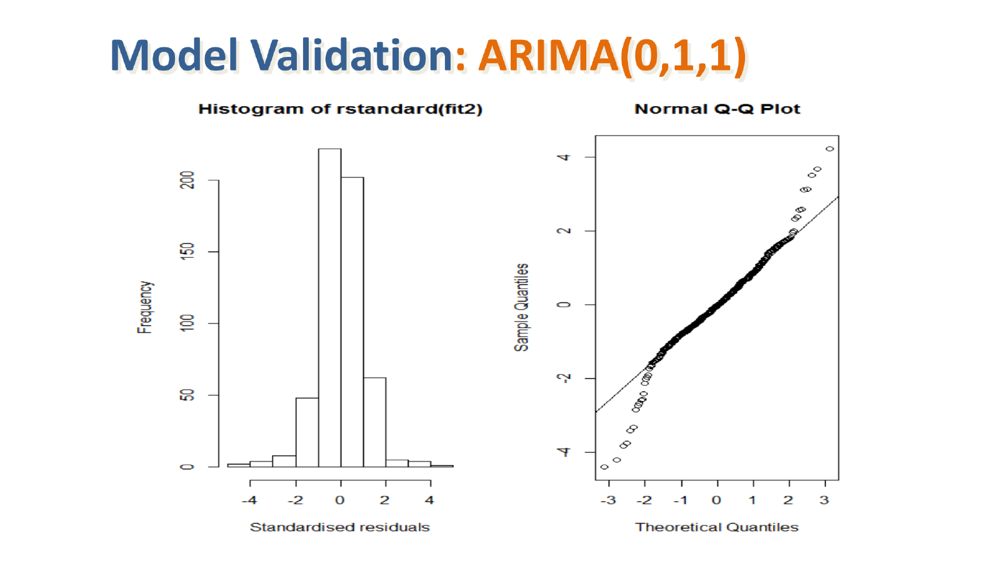
รูปร่างแทบเหมือน ARIMA(2,1,0) หางหนาทั้งสองข้าง ด้าน normality สองโมเดลจึงไม่ต่างกัน ต้องใช้เกณฑ์อื่นตัดสิน
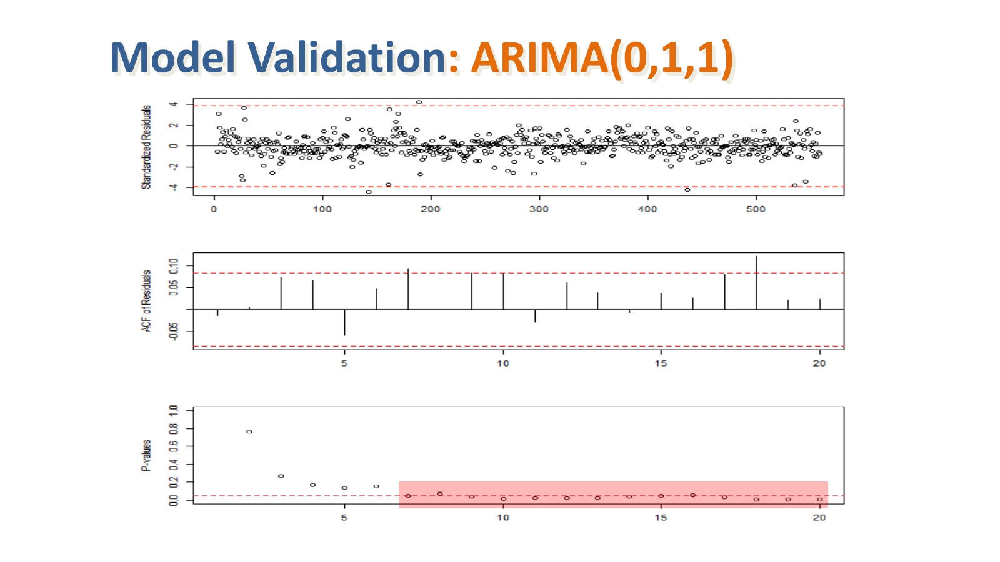
Ljung-Box ของ ARIMA(0,1,1) ต่ำกว่า 0.05 หลายจุดตั้งแต่ราว lag 7 เป็นต้นไป แปลว่า residual ยังมี autocorrelation รวมที่ MA(1) จับไม่หมด
| ARIMA(0,1,1) | ARIMA(2,1,0) | |
|---|---|---|
| จำนวนพารามิเตอร์ ARMA | 1 (ชนะเรื่อง parsimony) | 2 |
| σ² | 0.1966 | 0.1956 |
| normality | ไม่ผ่าน | ไม่ผ่าน |
| Ljung-Box | ไม่ผ่านหลายจุดตั้งแต่ lag 7 | ไม่ผ่านแค่ lag ท้าย ๆ |

ข้อสรุปของสไลด์คือ ARIMA(0,1,1) พอใช้ได้ แต่ ARIMA(2,1,0) ดีกว่าเล็กน้อย (เพราะ Box-Ljung test) แม้มีพารามิเตอร์มากกว่า
parsimony ใช้ตัดสินเฉพาะเมื่อ diagnostic ดีเท่ากัน การบ้านบนสไลด์คือลอง ARIMA(1,1,2) รันแล้ว AIC ต่ำกว่าทั้งสองตัวและ Ljung-Box ผ่านทุก H แต่ราก AR 1.059 ใกล้รากหนึ่งของ MA (1.130) มาก โมเดลจึงเกือบมีตัวประกอบร่วม ซึ่งคือ parameter redundancy ใน Lesson 7 ตอน 4.1 ควรระวัง


สไลด์ชุด FORECAST_AND_SARIMA หน้า 1–13 อยู่ในโฟลเดอร์ CLASS 8 แต่ในคลิปไม่ได้ลงรายละเอียด การพยากรณ์ในทางปฏิบัติใช้คำสั่ง forecast คำสั่งเดียว และการเลือกและตรวจโมเดลสำคัญกว่า45 multi-step ก็ยังไม่ได้สอนละเอียด46 ตอนนี้จึงเหลือแค่สิ่งที่ช่วยอ่าน output ได้ถูก (หนังสือ Section 3.5)
พยากรณ์ยอดขายพรุ่งนี้ เราใช้ทุกอย่างที่รู้แล้ว (ยอดวันนี้ เมื่อวาน) ส่วนโชคของพรุ่งนี้ยังไม่เกิด เดาได้ดีที่สุดคือค่าเฉลี่ยของมัน ซึ่งเป็นศูนย์
สไลด์ตั้งโจทย์ว่า พยากรณ์ X(n+m) เมื่อรู้ X₁, …, Xₙ และคำตอบที่ดีที่สุดคือ ค่าคาดหมาย (แบบมีเงื่อนไข) ของ X(n+m) เมื่อรู้ X₁, …, Xₙ วิธีง่ายคือเขียน X(n+1) เป็น ผลรวมเชิงเส้นบางแบบของ X₁, …, Xₙ บวกพจน์ที่ไม่สัมพันธ์กับ X₁, …, Xₙ ส่วนแรกคือค่าพยากรณ์
| แนวทาง | ต้องรู้อะไร | หมายเหตุ |
|---|---|---|
| ค่าคาดหมายแบบมีเงื่อนไข | การแจกแจงร่วมของทุกตัว | ดีที่สุด (MSE ต่ำสุด) ถ้า Gaussian จะเป็นฟังก์ชันเชิงเส้นของ X |
| BLUP \(X^n_{n+1}=\phi_{n,1}X_n+\dots+\phi_{n,n}X_1\) | แค่โครงสร้าง correlation | แก้ \(\Gamma\phi_n=\gamma_n\) หน้าตาเหมือน Yule-Walker ใน Lesson 7 ตอน 5.3 Durbin-Levinson ไม่ต้อง invert เมทริกซ์ |
| แยกส่วน (วิธีที่ใช้จริง) | สมการของโมเดล | AR(p): \(X^n_{n+1}=\phi_1X_n+\dots+\phi_pX_{n+1-p}\) แทนค่าที่รู้แล้วตั้ง shock อนาคตเป็น 0 |
\(X_t-50=0.8(X_{t-1}-50)+w_t\), σ² = 4 และค่าสุดท้าย \(X_n=60\)
\(X_{n+1}^n=50+0.8(10)=58\) ความคลาดเคลื่อนคือ \(w_{n+1}\) MSPE = σ² = 4
แทน \(X_{n+1}=58+w_{n+1}\) ได้ \(X_{n+2}^n=50+0.64(10)=56.4\) ความคลาดเคลื่อน \(w_{n+2}+0.8w_{n+1}\) MSPE = 4(1 + 0.64) = 6.56
\(X_{n+h}^n=50+0.8^h(10)\) เข้าหา 50 และ MSPE \(=\sigma^2(1+\phi^2+\dots+\phi^{2(h-1)})\to\sigma^2/(1-\phi^2)=11.1\)
สำหรับ ARMA \(X_{n+1}=\phi_1X_n+\dots+\theta_1w_n+\dots+w_{n+1}\) ส่วนที่ติดคือ \(\theta_1w_n+\dots\) ซึ่งเป็น shock ในอดีตที่ไม่เห็น ถ้าโมเดล invertible \(w_t\) เขียนได้จาก X ในอดีต (π weights ใน Lesson 7 ตอน 4.5) ในทางปฏิบัติจึงใช้ residual แทน นี่คือคำตอบเชิงปฏิบัติของ "ทำไมต้อง invertible"
φ̂ = −0.6169, θ̂ = −0.7233, μ̂ = 0.0235, ค่าสุดท้าย \(X_{150}=-2.9693\), residual สุดท้าย \(\hat w_{150}=-1.9058\)
\(X_{151}^{150}=\mu+\phi(X_{150}-\mu)+\theta\hat w_{150}=0.0235+(-0.6169)(-2.9928)+(-0.7233)(-1.9058)=3.248\) ตรงกับ predict(nat, n.ahead = 1)
\(X_{152}^{150}=0.0235+(-0.6169)(3.248-0.0235)=-1.966\)
แทน \(X_{n+1}=X^n_{n+1}+w_{n+1}\) ลงในสมการของ \(X_{n+2}\) แล้ว \(w_{n+1}\) โผล่สองที่ คือผ่าน φ₁ และผ่าน θ₁ ความคลาดเคลื่อนจึงมี shock สองตัวแทนตัวเดียว MSPE เพิ่มขึ้นเมื่อพยากรณ์ไกลออกไปในอนาคต และ ช่วงพยากรณ์ (PI) กว้างขึ้นตาม
times: \(1.57[1+(-0.6169-0.7233)^2]=4.390\) ราก \(=2.095\) ตรงกับ se ก้าวที่สองที่ R รายงาน ตัวคูณ \(\theta_1+\phi_1\) ก็คือ ψ₁ ใน Lesson 7 ตอน 4.5 (ข้อ 4 ได้ ψ₁ = 0.9 + 0.5 = 1.4) สูตรทั่วไปคือ MSPE h ก้าว \(=\sigma^2(1+\psi_1^2+\dots+\psi_{h-1}^2)\)
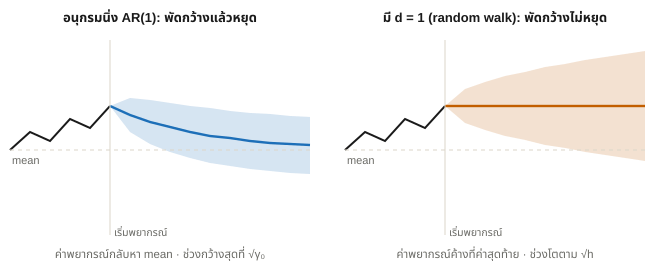
ซ้ายคืออนุกรมนิ่ง ψ weights ลดลงจนเกือบศูนย์ ผลรวมใน MSPE จึงหยุดโตที่ γ₀ ขวาคืออนุกรมที่มี d ≥ 1 ψ weights ไม่ลดลง (random walk มี ψ = 1 ทุกตัว) MSPE = hσ² จึงโตไม่สิ้นสุด ตรงกับ variance ของ random walk ที่โตตามเวลาใน Lesson 1
ψ₁ = 0.5 + 0.3 = 0.8 จึงได้ 2(1 + 0.64) = 3.28 และ se = √3.28 = 1.81
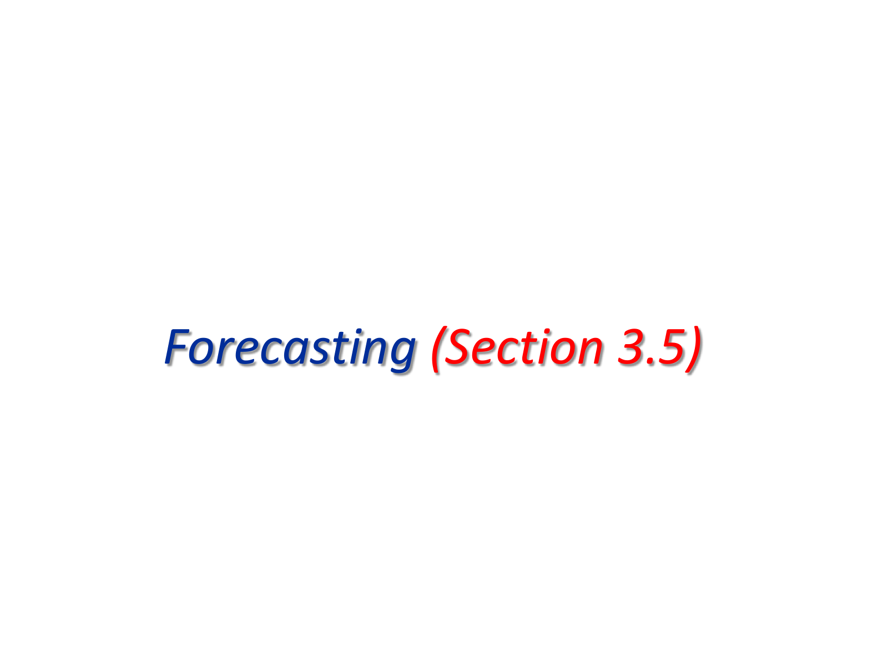
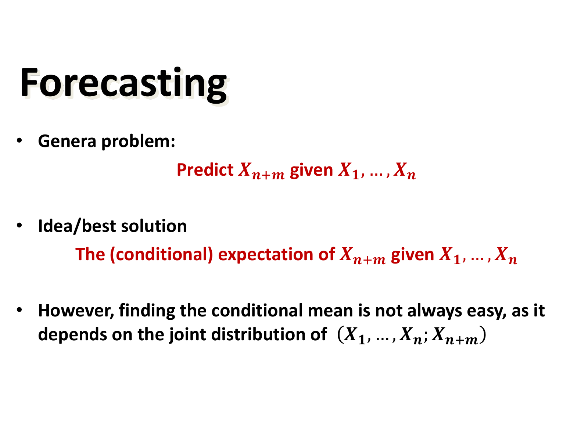

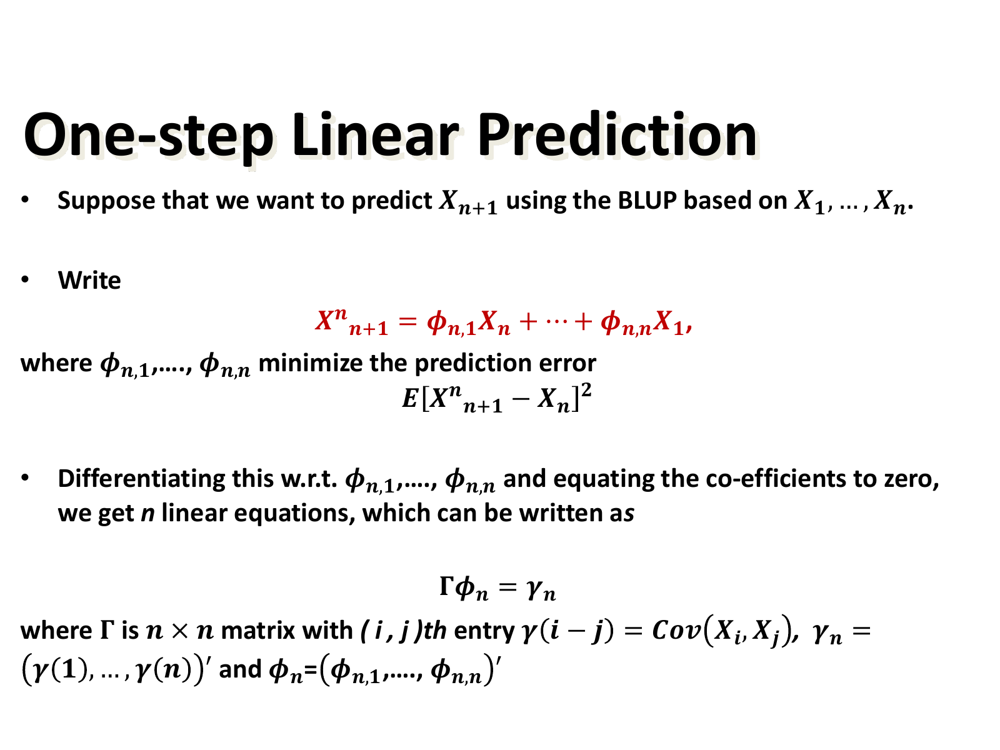


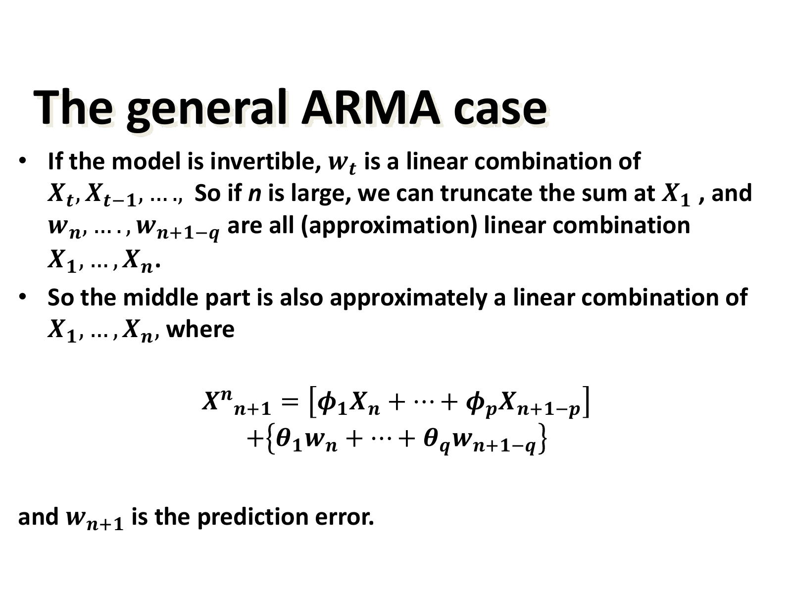

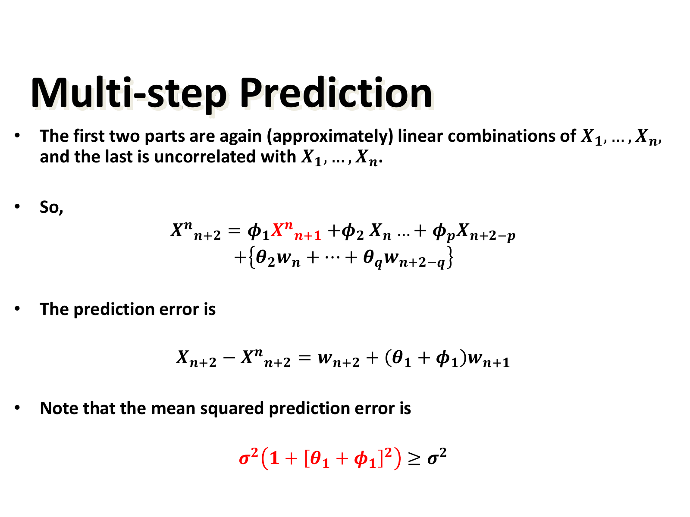

predict(nat, n.ahead = 20) คืนสองส่วน คือ $pred (ค่าพยากรณ์) และ $se (รากของ MSPE) ค่า 1.96 มาจาก qnorm(0.975, 0, 1) ช่วงนี้สมมติว่า error เป็น normal จึงต้องตรวจ normality ในตอน 1.3 ก่อน
ก้าว pred se lower upper 1 3.248 1.253 0.792 5.704 2 -1.966 2.095 -6.072 2.141 20 0.023 2.474 -4.826 4.873
ค่าพยากรณ์ของ times แกว่งแล้วเข้าหา mean และ se หยุดโตที่ 2.474 ซึ่งเกือบเท่า SD ของข้อมูล (2.468) ตรงกับภาพซ้ายในตอน 4.3 ข้อมูลที่ต้องแปลงหรือ difference ให้ภาพต่างออกไป
| โมเดล | ค่าพยากรณ์ไกล ๆ | se |
|---|---|---|
| นิ่ง (times, d = 0) | เข้าหา mean | หยุดโตที่ √γ₀ |
| d = 1 (อุณหภูมิ ARIMA(1,1,1)) | ค้างใกล้ค่าสุดท้าย (0.34, 0.31, 0.30, …) | โตไม่หยุด (0.109 → 0.141 ใน 5 ก้าว) |
| ฟิตบน log X | ต้อง exp() กลับ | exp ทั้งสองขอบ ช่วงจึงไม่สมมาตร |
ตรวจหนึ่งก้าวของอุณหภูมิด้วยมือ (ARIMA(1,1,1) แบบใส่ d): \(\hat X_{1998}=X_{1997}+\phi(X_{1997}-X_{1996})+\theta\hat w_{1997}=0.43+0.3326(0.21)-0.7887(0.1982)=0.3435\) ส่วน log: log scale 5 ± 0.2 แปลงกลับได้ [e^4.8, e^5.2] = [121.5, 181.3] รอบ e^5 = 148.4 ซึ่งห่างลง 26.9 แต่ห่างขึ้น 32.9
ส่วนท้ายของ R_codes ที่ comment ไว้แสดงวิธีกับ log คือ arima(log(data), order = c(0,1,1)) แล้ว exp(predict(...)$pred) ถ้าลืม exp จะได้ค่าพยากรณ์ในหน่วย log และ accuracy ผิดทั้งหมด เหมือนกรณีลืม undifference ในตอน 2.4
nat <- arima(data, order = c(1,0,1), method = 'ML')
nat.predict <- predict(nat, n.ahead = 20)
round(nat.predict$pred, 3)
round(nat.predict$se, 3)
lower.pi <- nat.predict$pred - qnorm(0.975, 0, 1) * nat.predict$se
upper.pi <- nat.predict$pred + qnorm(0.975, 0, 1) * nat.predict$se| โค้ด | ทำอะไร |
|---|---|
| predict(nat, n.ahead = 20) | พยากรณ์ 20 ก้าว คืนสองส่วน: $pred (ค่าพยากรณ์) และ $se (รากของ MSPE) |
| qnorm(0.975, 0, 1) | 1.96 ค่าวิกฤตของ normal สำหรับช่วง 95% |
| pred ± 1.96 se | prediction interval 95% สมมติว่า error เป็น normal |
ตารางเต็มของ times: ก้าว 3 = 1.251 (se 2.337), ก้าว 10 = −0.018 (se 2.474) และ aerosol ARIMA(2,1,0) ได้ 112.365, 112.332 และ 112.325 ที่ก้าว 12 ใกล้ค่าสุดท้าย 112.185 ส่วน se เพิ่มจาก 0.442 เป็น 1.026
หน้าแบบฝึกมีแบบฝึกห้ากลุ่มพร้อมเฉลย ลองฝึกต่อในแบบฝึก Lesson 8 หรืออ่านต่อ Lesson 9 — SARIMA
ตัวเลขยกในเนื้อหาชี้มาที่รายการนี้ แต่ละรายการระบุคลาสและนาทีของคลิป พร้อมถ้อยคำในคลิปเมื่อมี
| หน้า | เนื้อหา | อยู่ในตอน |
|---|---|---|
| 1–10 | ปก, residual, standardized residual, normality, ACF ของ residual, Ljung-Box, tsdiag | ตอน 1 |
| 11–24 | อุณหภูมิโลก: ข้อมูล, ACF/PACF, AIC/BIC, diff ก่อนหรือใน ARIMA, estimation และ validation | ตอน 2 |
| 25–39 | Aerosol particle size | ตอน 3 |
| FORECAST_AND_SARIMA หน้า | เนื้อหา | อยู่ในตอน |
|---|---|---|
| 1–5 | Forecasting, BLUP, one-step | ตอน 4 |
| 6–8 | หน้าว่าง | etc — ไม่มีเนื้อหา |
| 9–13 | ARMA ทั่วไป, multi-step, MSPE | ตอน 4 |
| 14–52 | Seasonal ARIMA | etc — สอนใน Lesson 9 |
แหล่งอื่นที่ใช้: Class 8 ช่วง 0:26–1:23 (ตอน 1–4), Class 9-2 ที่ 1:01 (multi-step) และ 1:13–1:17 (diff ก่อนหรือใน ARIMA), ไฟล์ R_codes.txt และ aero.txt (CLASS 8), R_codes.txt และ times.txt (CLASS 7), temp.txt (CLASS 2)